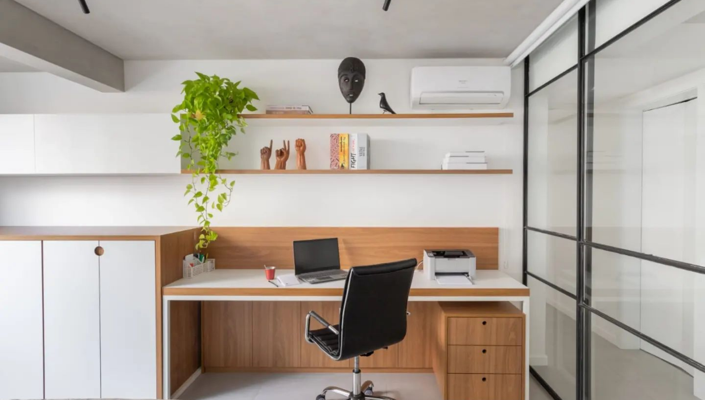
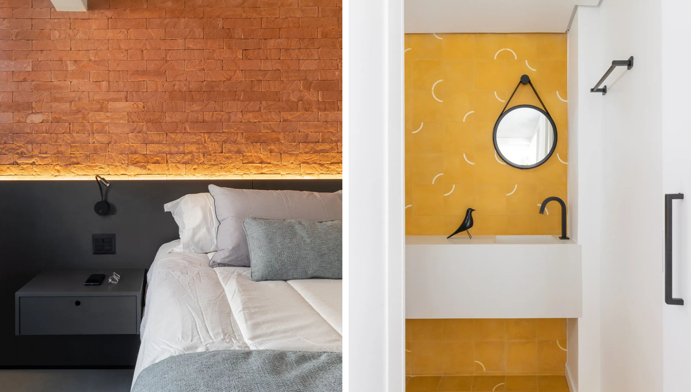
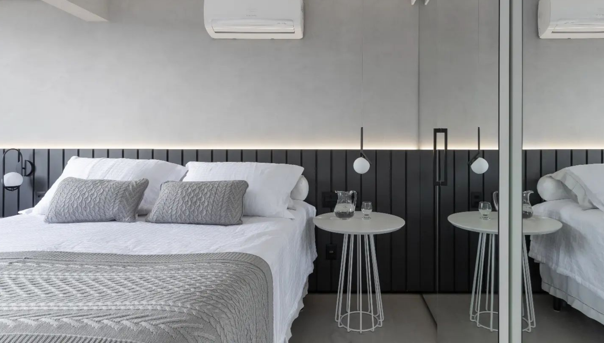
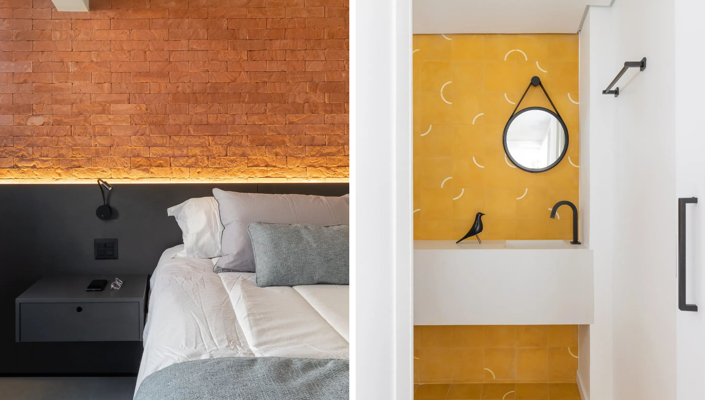
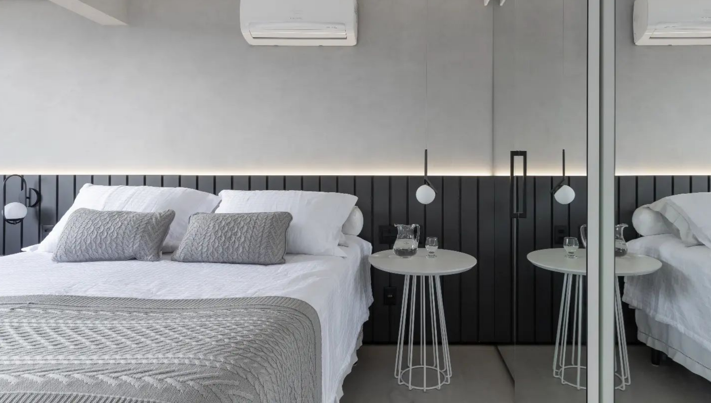

Apt Cobogó
Apartament Cobogó was a renovation project with the architect Juliana Mendes. The first thing we did was to open up the living area by removing a non-load-bearing wall, which instantly made the space feel more airy and light. From there, we focused on bringing in natural elements to create a cozy and inviting atmosphere. We wanted to create a space that was not only beautiful, but also functional and comfortable for everyday living.
 


